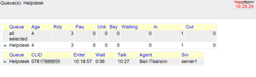

QueueMetrics Wallboard
QueueMetrics already has a wallboard. Why build another?
The QueueMetrics wallboard is functional but it also looks ugly and can be quite hard to read. This is my effort to make things a little better.
So this code is fantastically stable?
Well I've been using it in production for a couple of years and it works fine but I would advise extensive testing before going live with it.
Missing things:
- Error handling - it doesn't break gracefully at all
- A more efficient way of querying the QueueMetrics server
- I haven't built any tests
What's it made of?
How do I make this work?
You will need:
- A running and installed QueueMetrics server
- Any OS that can run Ruby (both 1.8.7 and 1.9 seem to work fine)
- The following Ruby gems: Sinatra, HAML, Configatron
- The files in this repository
You need to do the following:
- Copy the files to a folder (maintaining the folder structure)
- Edit config.yml so that it has the following info:
- Server and port are the ip address and port of your server, which should be clearly visible in the QM URL. The path probably doesn't need to change.
- Queue is the queue you want to manage, as seen in the QM application.
- User and password is the credentials you use to login to QM (you should create an account specially for your wallboard).
- To test the app just do the following:
ruby qm_web.rb
- If you want to run this in a more permanent manner then you'll need to look into running Sinatra apps on your web server of choice. I've been using Apache and Phusion Passenger.
Some things you might want to change:
- The wallboard updates every ten seconds. If you edit ./views/index.haml you can change the values in the javascript block from 10000 to anything you wish. I wouldn't recommend setting it lower than that.
- You can change the default font size. If you edit ./public/css/style.css you can change the font-size in the body block and this will change everything else proportionally.
